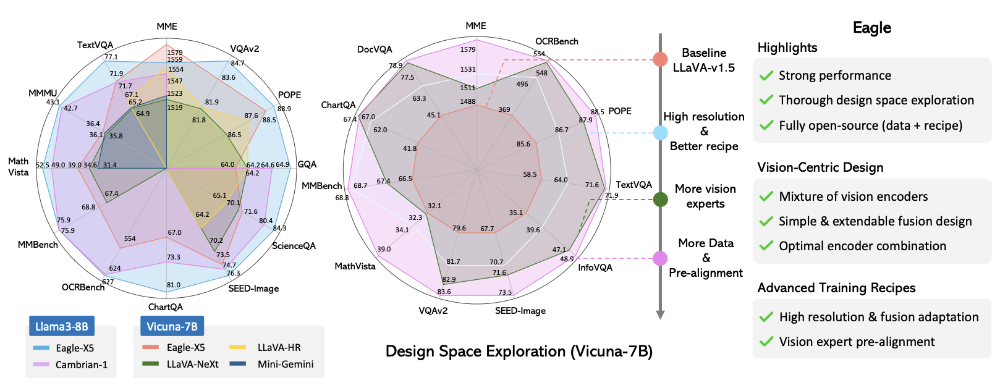
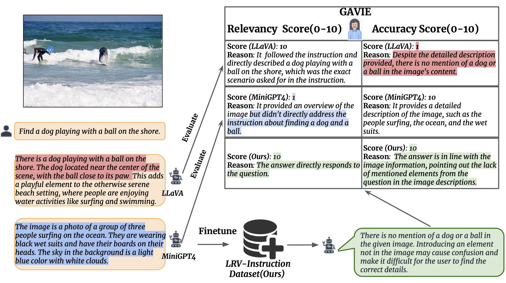
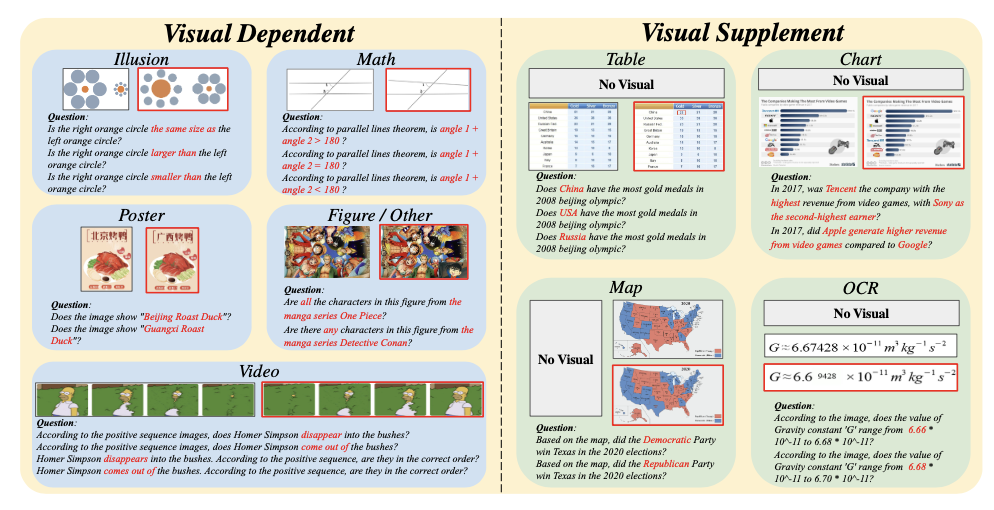
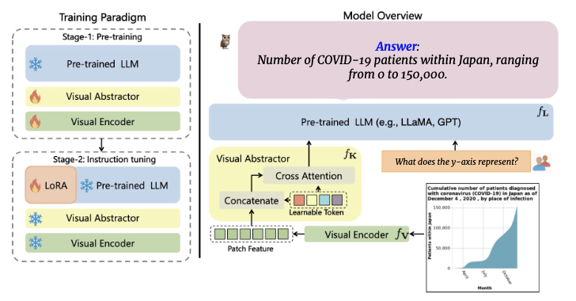
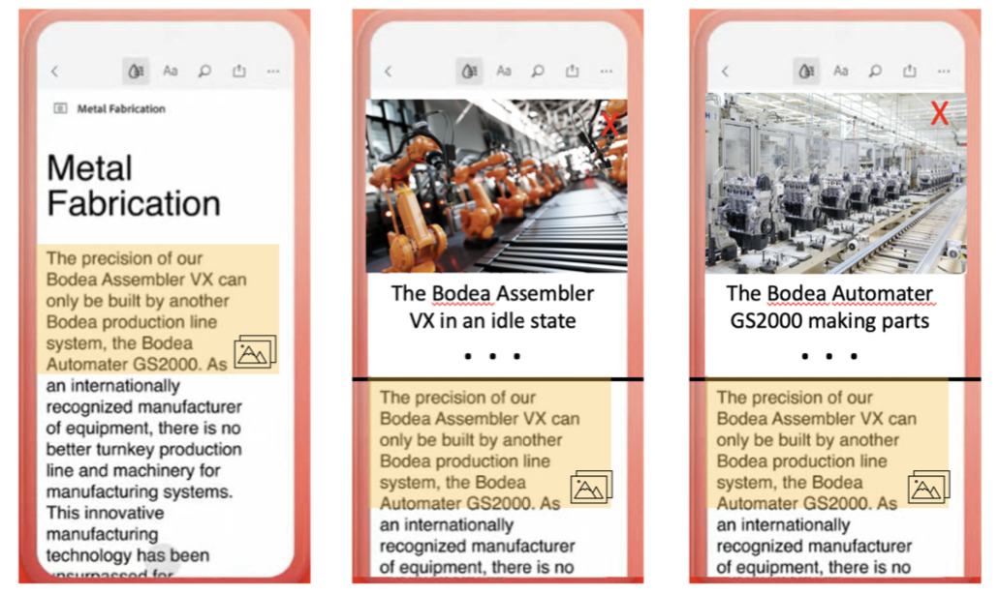
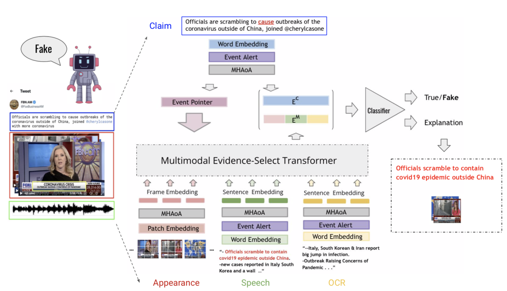
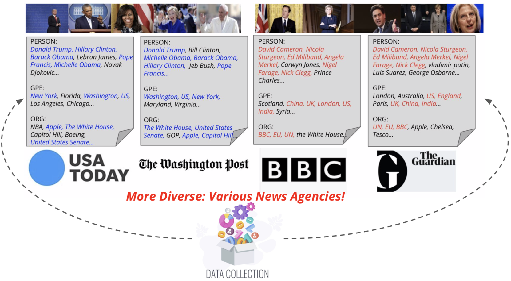

Fuxiao Liu
刘赋骁
Research Scientist at NVIDIA, working on the Nemotron family of foundation models.
Ph.D. from University of Maryland, College Park (May 2025), advised by Abhinav Shrivastava, Yaser Yacoob, Tianyi Zhou, and Furong Huang.
My recent focus is on building customizable, efficient, and open multimodal foundation models.
Selected Publications
Nemotron 3
Nano Omni
NVIDIA · 2026
Nemotron 3 Nano Omni: Efficient and Open Multimodal Intelligence NEWCore Author
NVIDIA Nemotron Team (incl. Fuxiao Liu)
NVIDIA
Nemotron
Nano 2 VL
NVIDIA · 2025
NVIDIA Nemotron Nano V2 VL: Efficient Open Vision-Language Foundation Model NEWCore Author
NVIDIA Nemotron Team (incl. Fuxiao Liu)
Nemotron-H
Mamba ⨯ Transformer
NVIDIA · 2025
Nemotron-H: A Family of Accurate and Efficient Hybrid Mamba–Transformer Models NEWCore Author
NVIDIA Nemotron Team (incl. Fuxiao Liu)

ICLR 2025
EAGLE: Exploring The Design Space for Multimodal LLMs with Mixture of Encoders
Fuxiao Liu*, Min Shi*, Shihao Wang, Shijia Liao, Subhashree Radhakrishnan, De-An Huang, Hongxu Yin, Karan Sapra, Yaser Yacoob, Humphrey Shi, Bryan Catanzaro, Andrew Tao, Jan Kautz, Zhiding Yu*, Guilin Liu*

ICLR 2024
Mitigating Hallucination in Large Multi-Modal Models via Robust Instruction Tuning
Fuxiao Liu*, Kevin Lin, Linjie Li, Jianfeng Wang, Yaser Yacoob, Lijuan Wang

CVPR 2024
HallusionBench: You See What You Think? Or You Think What You See?
Fuxiao Liu*, Tianrui Guan*, Xiyang Wu, Ruiqi Xian, Xijun Wang, Zongxia Li, Lichang Chen, Yaser Yacoob, Dinesh Manocha, Tianyi Zhou

NAACL 2024
MMC: Advancing Multimodal Chart Understanding with Large-scale Instruction Tuning
Fuxiao Liu*, Xiaoyang Wang, Wenlin Yao, Jianshu Chen, Kaiqiang Song, Sangwoo Cho, Yaser Yacoob, Dong Yu

ICPRAI 2023
DocumentCLIP: Linking Figures and Main Body Text in Reflowed Documents
Fuxiao Liu*, Hao Tan, Chris Tensmeyer

EACL 2023 · Oral
COVID-VTS: Fact Extraction and Verification on Short Video Platforms
Fuxiao Liu*, Yaser Yacoob, Abhinav Shrivastava

EMNLP 2021 · Oral
Visual News: Benchmark and Challenges in News Image Captioning
Fuxiao Liu*, Yinghan Wang, Tianlu Wang, Vicente Ordonez
Other Publications
[NAACL 2025]
Large language models and causal inference in collaboration: A comprehensive survey
Xiaoyu Liu, Paiheng Xu, Junda Wu, Yuhang Zhou, Fuxiao Liu*, Tianrui Guan, Haoliang Wang, Tong Yu, Julian McAuley, Wei Ai, Furong Huang
Service
Conference Reviewer
AISTATS, CVPR, NAACL, ACL, IJCAI, ACMMM
Journal Reviewer
JMIR
About
I'm crazy about basketball since I was a little boy. I love it for its ultimate technical and mentality requirements.
No one in the world can become a master without great talent and extensive training.
My favorite basketball player is Kobe Bryant, who is noted for his rapid playing style, strong will, and his ambivalent relationship with the sport.
I am always immersed in his phenomenal performance in the game.